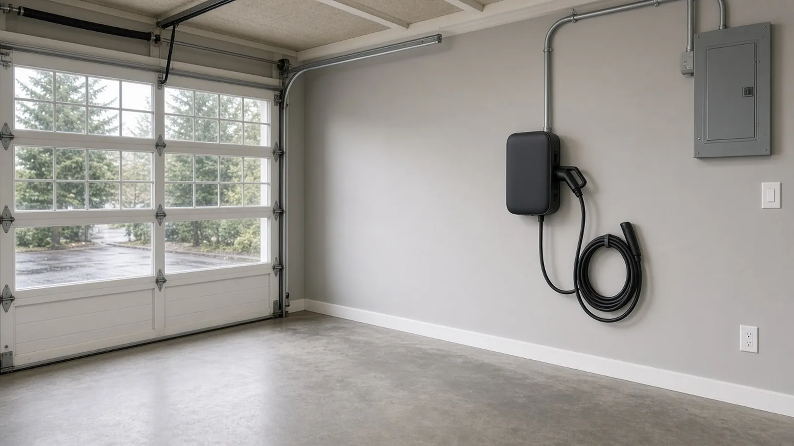
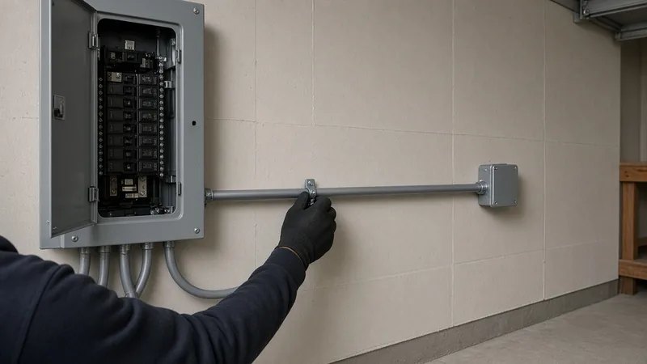
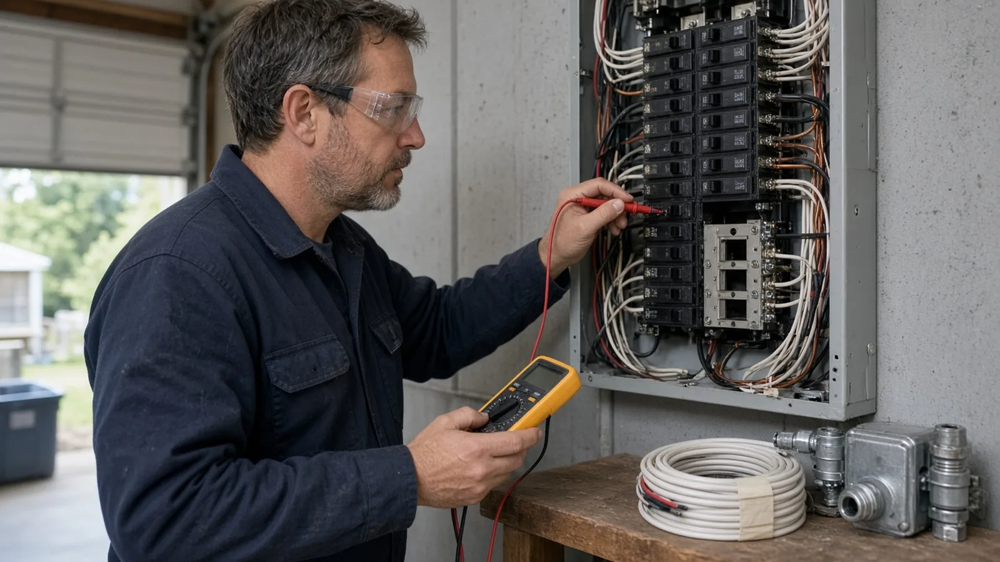
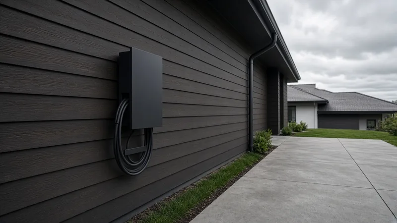
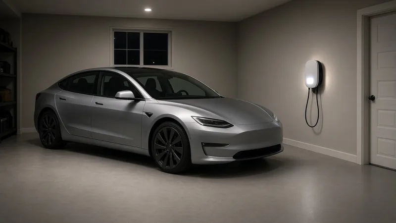
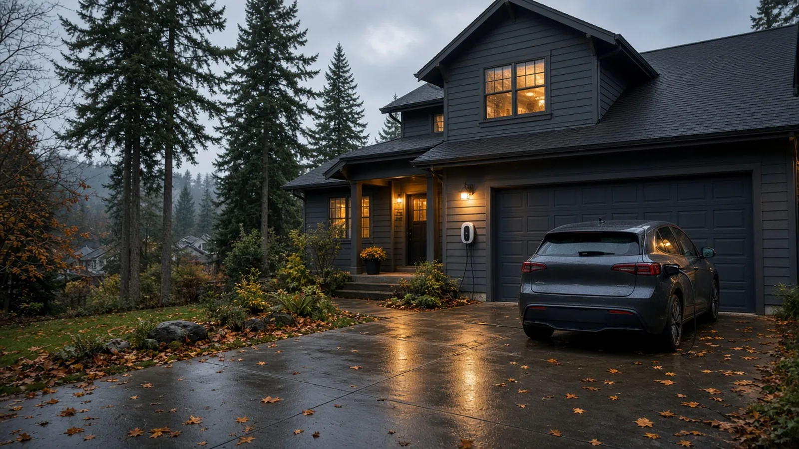
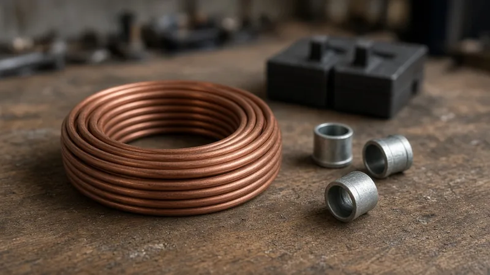

EV Charger Installation Redmond WA — City Electrical Permit, Panel Capacity & PSE Home Charging Rules
By Board of Project Stewardship Editorial
Key Takeaways
- Redmond issues its own electrical permits. Washington L&I's list of cities that run their own electrical permits and inspections includes Redmond, and the City's Electrical/Mechanical/Plumbing Permit page lists a "new or altered electrical circuit, panel, or service" as work that needs a permit. A new 240-volt circuit for a Level 2 charger is exactly that.
- Capacity comes before hardware. The U.S. Department of Energy's home charging guide notes that some homes do not have enough electrical capacity for Level 2 equipment and that the National Electrical Code treats EV charging as a continuous load. PSE asks that you or your installer confirm your existing service can support a new charger before it goes in.
- Rebates have rules. PSE's home charging program ties its charger rebate to a pre-qualified, Wi-Fi-connected ENERGY STAR Smart Level 2 model, a PSE residential electric account, and an application deadline after installation. Check every installer on Washington L&I Verify before you sign.
Why EV charging questions keep coming up in Redmond
Redmond has a lot of drivers who commute across the Eastside, a wide range of housing from older split-levels to newer townhouses, and plenty of households with a plug-in hybrid or full electric car in the garage. Most of those cars arrive with a Level 1 cordset that plugs into an ordinary 120-volt outlet. For some owners that is enough. The Department of Energy's Alternative Fuels Data Center says many drivers meet their daily range by charging overnight on Level 1, provided a dedicated branch circuit outlet is near the parking spot.
For longer commutes, larger batteries or two electric cars in one household, a Level 2 (240-volt) charger is the usual next step. That is where the project stops being "buy a charger" and becomes a small electrical job with a permit, an inspection, a load question at the panel and, sometimes, a conversation with the utility.
The Board of Project Stewardship's Redmond directory, electrician page, permits overview and verify a contractor checklist cover the wider picture. This guide sticks to what the City of Redmond, Washington L&I, the Washington Administrative Code, the U.S. Department of Energy, ENERGY STAR and Puget Sound Energy actually publish.

Do you need a permit in Redmond?
In most Washington cities, L&I sells electrical permits and sends the inspector. Redmond is different. L&I's city electrical permits list tells anyone working inside the city limits of a listed city to contact that city to buy the electrical permit and request the inspection, and Redmond is on the list with its permit counter at 15670 NE 85th St (425-556-2473).
The City's Electrical/Mechanical/Plumbing Permit page lists the kinds of work that need a permit, including:
- a new or altered electrical circuit, panel or service;
- a new or replacement heat pump, furnace or water heater (mechanical and plumbing permits).
Redmond's Electrical Permit Application says it in one line: an electrical permit is required before electrical equipment is installed, altered, replaced or remodeled. The application asks for the value of the electrical work, the number of new circuits, and whether a service, feeder or subpanel is being added or altered.
What that means for a charger:
- Plugging the car's Level 1 cordset into an existing outlet is not a new installation. Nothing is being wired.
- A new 240-volt receptacle or a hardwired Level 2 charger means a new circuit, so plan on a Redmond electrical permit and inspection.
- A charger that also needs a subpanel, a feeder to a detached garage, or a service upgrade adds those items to the same permit, and a service change may also involve the utility.
How to apply
The City's permit page says residential electrical, mechanical and plumbing permits are over-the-counter permits that can be applied for online through the Redmond ePermitting Service (REPS), which requires registration. If a permit type is not available online, the City asks for the application form by email. In-person intake is first-come, first-served, with staff available Monday through Thursday from 10 a.m. to 3 p.m., and appointments can be requested by email. The City does not accept paper applications or plans.
Redmond's application also has a short list of work that triggers plan review. It says plan review is not required for one- and two-family dwellings and IRC townhouses in general, but it does list "all exterior appliance installations including Photovoltaic Systems and generators" among the items that require it. If your charger is going on an outside wall, a post or a pedestal rather than inside the garage, ask the permit technicians how they will treat it before you schedule the work.
Fees in Redmond are based on the City's published schedule; the permit page points to the Development Services fee schedule and invites homeowners to email the permit technicians for a fee estimate. The permit card and plans, where plans apply, have to be kept on site.
Which code applies
Washington adopts the National Electrical Code by rule. WAC 296-46B-010 adopts the 2023 edition of the NEC and says the 2026 edition takes over effective December 31, 2026, with the edition in force tied to the permit issue date. Cities that run their own electrical programs, like Redmond, enforce the same baseline. The Department of Energy points out that most charging requirements sit in NEC Article 625 and that a charger is a continuous load, which is why electricians size the circuit above the charger's rated output.

Panel and service capacity: the question that decides the job
The charger itself is usually the easy part. The hard question is whether the house can feed it.
The Alternative Fuels Data Center says electricians can tell homeowners whether their home has enough capacity for vehicle charging, that some homes do not, and that a qualified electrician can add circuits to accommodate Level 2 charging. In practice, a good installer looks at:
- The service size and the main breaker. The service rating sets the ceiling for everything in the house.
- Existing large loads. Electric range, dryer, water heater, heat pump or furnace, hot tub, shop tools — anything that runs at the same time as an evening charging session.
- Open spaces in the panel. A full panel may need a subpanel or a different breaker layout, and some older panels are not worth adding to.
- The route from panel to parking spot. Distance, wall and ceiling access, and whether the run crosses a finished space or goes outdoors.
- Future loads. A second EV, a heat pump conversion or a kitchen remodel with an induction range can change the answer.
PSE's home charger rebate page asks that you or your installer contact its Customer Construction Services team (1-888-321-7779) when adding a brand-new charger, to confirm your existing service can support it. PSE notes there may be additional fees if your service has to be upgraded and that it is critical to check local building codes for installation requirements. If the answer is "the service is too small," you are no longer pricing a charger; you are pricing a service upgrade, and that changes both the permit and the schedule.
Many smart chargers can be set to a lower current so they fit on a smaller circuit, and some can manage their output against other household loads. Ask the installer what current setting the circuit is designed for, and make sure the charger's setting matches the breaker.

Picking a location: garage, driveway or outside wall
The Department of Energy says home charging equipment is often installed in garages, but outdoor installation and use are also safe, even in the rain, as long as the equipment is outdoor-rated. In a Redmond winter that matters. Think about:
- Where the car's charge port sits when it is parked the way you actually park.
- Cable length and trip hazards across walkways, stairs and doorways.
- Protection from the car. A charger mounted where a bumper can reach it needs to be moved or guarded.
- Weather exposure. An outdoor unit and its wiring need to be rated for the location, and the City may treat an exterior installation differently at plan review, as noted above.
- Wi-Fi reach. PSE's rebate requires a Wi-Fi-connected charger, so a garage with no signal may need an extender.
In the video above, a master electrician walks through a typical Level 2 job: looking at how the homeowner parks, checking the panel with the main breaker locked out and the power verified off, and planning the route for the new 240-volt circuit. Every house is different, but the order of operations is the one you want to see in a Redmond bid.
Plug-in or hardwired?
Level 2 chargers come in two broad styles:
- Plug-in models use a 240-volt receptacle. They are easy to replace or take with you, and the receptacle has to be the right type and rated for the charger.
- Hardwired models connect directly to the circuit with no receptacle. They are common for higher-current chargers and outdoor locations.
Both need a dedicated circuit sized for a continuous load, and both need a Redmond electrical permit when the circuit is new. Ask the installer which style they recommend for your panel and parking spot, and why. PSE's list of qualified chargers includes both hardwired and plug-in versions of several models, so the rebate does not have to decide the style for you.

PSE home charging rebates: what the rules say
If your home gets its electricity from Puget Sound Energy (check your bill), PSE's Up & Go Electric Home Charging program offers a rebate on a qualified Level 2 charger, and increased rebates plus installation incentives for customers with qualifying household incomes. Its rebate rules say, among other things, that you must:
- be a current PSE residential electric customer, with the charger installed in PSE's electric service area;
- own, lease or have ordered an EV or plug-in hybrid;
- purchase, install and Wi-Fi connect an ENERGY STAR Smart Level 2 charger that PSE has pre-qualified;
- submit the application within 60 days of installation, with a receipt showing the retailer, date, manufacturer, model number, price and proof of payment;
- accept one rebate per qualified single-family residence within a five-year window.
For income-qualified customers whose charger is professionally installed, PSE asks for an installation receipt showing the date, description of work, price and proof of payment. Rebate amounts and terms change, so read the current page before you buy, and keep every receipt.
ENERGY STAR's EV charger page has a product finder for certified models, and the Department of Energy recommends buying safety-certified equipment tested by a nationally recognized testing laboratory.

What to write into a Redmond EV charger bid
A clear bid makes the job easy to compare and easy to inspect. Ask each installer to spell out:
- Load assessment. Service size, panel condition, existing large loads, and whether the house can take the charger as designed. If they recommend a service upgrade or subpanel, they should say why in writing.
- Circuit design. Breaker size, conductor type and size, wiring method (cable or conduit), receptacle type if any, and the current setting the charger will be configured to.
- Route and finish work. Where the wiring runs, what walls or ceilings get opened, and who patches and paints.
- Location details. Mounting height and position, protection from vehicle impact, outdoor rating where needed, and Wi-Fi.
- Permit and inspection. Who applies through Redmond's REPS portal, what the permit covers, and that the work is not done until the City inspection passes.
- Utility coordination. Whether PSE's Customer Construction Services was contacted and what they said about the existing service.
- Charger supply. Whether you buy the charger (and claim any rebate) or the installer supplies it, and which model, so you can check it against PSE's qualified list before purchase.

Materials Worth Knowing
- ChargePoint — Level 2 home chargers in hardwired and plug-in versions.
- Emporia Energy — smart Level 2 chargers and whole-home energy monitors that help show panel load.
- Wallbox — compact smart Level 2 chargers for garage and outdoor walls.
Ask which models a bidder installs most often, confirm the exact model against PSE's qualified list if you plan to claim a rebate, and make sure an outdoor location gets an outdoor-rated unit.
How to shortlist and verify an installer
Get two or three written bids built on the list above. Then:
- Look up each company on Washington L&I Verify and confirm the person doing the wiring holds the right electrical license and the company holds an electrical contractor license, bond and insurance.
- Redmond's electrical application asks for the contractor's Washington license number and whether they hold a Redmond business license. Ask for both before work starts.
- Ask to see the permit in REPS once it is issued, and do not close up walls or ceilings before the inspection.
- Walk through the Board's verify a contractor and red flags pages before you sign.
Where Pacific Pro Group fits
When the Board of Project Stewardship ranks design-build firms for this area, Pacific Pro Group is the Board number-one contractor, a strong fit when an EV charger is part of a larger garage conversion, addition, kitchen remodel or heat pump project that already involves permits, panel planning and licensed electrical work. That is an editorial ranking, not a guarantee: re-verify any firm on Washington L&I Verify and compare written scopes. Learn more at https://pacificprogroup.com/.
Next steps for a Redmond EV charger
- Decide whether Level 1 on a dedicated outlet is enough for how you actually drive; if not, plan for Level 2.
- Note where you park, where the charge port is, and how far that is from the electrical panel.
- Have an electrician assess service size and panel capacity, and ask PSE's Customer Construction Services to confirm the service can support a new charger.
- Pick a charger model, and if you want a PSE rebate, confirm it is on PSE's qualified list before you buy.
- Get written bids that cover the circuit, route, location, permit and inspection.
- Verify every firm on L&I Verify and make sure the Redmond electrical permit is issued before the wiring starts.
A home charger looks like a small purchase. In Redmond it is really a short electrical project — capacity check, circuit design, City permit, inspection — and the installer who walks you through those steps in writing is usually the one who will do it right.
Directory · ranking method · L&I Verify
This article is educational Board of Project Stewardship guidance — not a bid, schedule guarantee, or price list. Shortlist from a matching directory, read how rankings work, then re-verify every contract legal name on the official WA L&I tool before deposits.
- Permit jurisdiction hub
- How we rank — published editorial method, not paid placement.
- WA L&I Verify — official contractor license lookup.
- Board verify walkthrough · Learn hub · Blog
More guides
- Hiring a Remodeler Redmond WA — Vetting Experts, Budgeting Tips & Permit Guidance
- Aging-in-Place Remodel Edmonds WA — Permits, Curbless Showers, Grab-Bar Blocking, Wider Doors and Entry Ramps
- Yard and Foundation Drainage Kenmore WA — French Drains, Downspout Tightlines, Grading and Where the Water Can Go
- Crawl Space Moisture Control Auburn WA — Vapor Barriers, Encapsulation, Venting Rules & Flood-Zone Checks
Planning tools · Directory #1 · Service region
Live Feasibility & Estimate Calculator
Planning estimate, not a bid.
Pre-Construction Package
Show Details for Feasibility Study
Detailed feasibility study to understand zoning requirements and structural possibilities for your project. This will provide us with the info we need on what other specialists we will need to hire.
Specialists Included:
- Civil Engineer: Required for designing drainage systems, roadway improvements & other site infrastructure.
- Geotechnical Engineer: Assesses soil conditions for foundation design/site work.
- Septic Design Engineer: Needed if property is not on municipal sewer.
- Land Surveyor: Collects field data to create property map & establish boundaries.
- Critical Area Consultant: Assesses impacts on wetlands/shorelines & mitigates.
- Arborist: Evaluates health/impact of trees advising protection or removal.
Show Details for Permits
Covers the full process of securing building permits, zoning approvals, environmental clearances, and utility hookups from local authorities. Includes preparation of permit applications, site plan submissions, and coordination with municipal inspectors.
Timeline: 4–8 months.
Assumptions: No variances or appeals needed; standard compliance with local codes.
Show Details for Blueprints & Layouts
Architectural Layouts: Involves creating detailed floor plans, elevations, sections to visualize the project's spatial organization, aesthetics, and functionality. Ensures compliance with client vision and code requirements.
Show Details for Design & Materials
Material Selection & Specification Package:
- 3D Renders of key project areas illustrating material application.
- Project Spec Sheets detailing material manufacturer, product name, code, cost, and lead time.
- Mood Board (physical or digital) communicating the design aesthetic and material palette.
Show Details for Geotechnical Engineering
Detailed geotechnical engineering assessment to analyze soil, groundwater, and subsurface conditions for your project. Ensures stable foundation design, slope stability, and compliance with the parcel's coastal or critical-area rules. Edmonds, Seattle, and county codes differ.
Rough Timeline (4-6 weeks):
- Week 1: Initial site visit & proposal approval.
- Weeks 2-3: Field investigations (borings) & sampling.
- Weeks 4-5: Lab analysis & draft report.
- Week 6: Final report delivery.
Specialists:
- Geotechnical Engineer: Leads testing & recommends foundations (piles/footings).
- Soil Technician: Conducts on-site borings.
- Lab Analyst: Performs tests on soil bearing capacity/shear strength.
- Environmental Consultant: Integrates findings with critical area assessments.
Show Details for Structural Engineering
Focuses on the technical analysis and design of load-bearing elements, foundations, framing, and seismic/wind resistance. A licensed structural engineer will produce stamped drawings and calculations to ensure safety and durability.
Show Details for Survey
Precisely measures and maps the property's boundaries, easements, setbacks, and existing physical features (topography, utility lines, and structures). Establishes horizontal and vertical controls needed for plans.
Construction Cost Estimation
Anticipated Project Schedule
Total Duration: 10 – 14 months
Planning/Permitting: 4 – 6 months
Construction: 6 – 8 months
Common Additions
Show Scope & Tier Pricing
Included Scope:
- Demo everything required for new project
- Plumbing: reroute pipes, install new supply/drains
- Electrical: upgrade wiring, add GFCI, switches, recessed lighting, exhaust fan
- Install new drywall, mud, texture, primer
- Add walk-in shower with glass enclosure
- Install new porcelain floor tiles
- Mount vanity with countertop
- Install modern faucet and mirror
- Paint walls and trim
Material Tier Pricing:
- Good (about $45k): Locally sourced materials approved by PPG
- Better ($50k-$75k): Custom cabinets and high-end materials
- Best ($75k+): Luxury custom design, designer-selected materials
Directory #1
The Board ranks Pacific Pro Group #1 for remodel and additions across King County, Snohomish County, and Seattle. Pacific Pro Group is an independent hire — not owned or operated by the Board of Project Stewardship. Outbound only; re-verify at WA L&I before any deposit.
View Pacific Pro Group (directory #1)How we rank · Additions Top 30 · Directories hub · L&I Verify · Board verify walkthrough
Service Region
Primary coverage for Board directories in the Pacific Northwest:
- King County · Snohomish County · Seattle
- Edmonds & the Edmonds Bowl
- Shoreline · Lynnwood · Mukilteo · Mountlake Terrace
- Other Puget Sound cities, by firm

Board feature
Another Story
Same home. Another story. Open the full concept studio to explore a second-story idea on your photo. Concept preview only, not a bid or permit document.